来源：https://ya0styax55s.feishu.cn/docx/R8bUdBHQcozgYXxdUCgcZSEsnag
各位圈友大家晚上好！我是星泽。
这算是我在生财的第一篇帖子，减少了繁琐的文字，讲更多的干货给大家。
在我用GPT之前，兼职文章项目一个月的收入能达到大几万，在使用GPT之后，收入更是直冲云霄。
因为GPT能大大降低写作的效率，只需要理解客户的要求，很快就能将一篇文章包装出来。
其实这个项目的本质仍然是信息差。①很多学生目前为止仍然不清楚GPT，这里属于一种信息差。②很多学生知道了GPT，但是懒得去购买，以及购买梯子，更别说用来写文章了。这里我更觉得是执行差。
本次我将为大家详细讲解：
①这个项目的潜力如何？
②如果潜力很大，那么又能做多久？
③潜力很大，可兼职甚至全职后，这个项目如何做？
④学会了技术，如何进行引流（前端如何做）？
全文请移步飞书：
相信很多圈友都是在校大学生，了解过学校总有一些水课，水课结课总需要一篇课程论文。这个论文不说学术层次有多高，只要不抄袭，基本上就能通过。有些课程2000字，有些课程需要3000字。而每一篇的单价达到了100-200元。一个学期，大学生会愿意花这一两百去完成一个课程作业，不被挂科。不要觉得我瞎说，我做了五年之久，深知这个市场有多大。且，客户之间会存在裂变。这就是为潜力打下了一个基础。
目前，我已经对接到了硕士级别的文章，他们仍然有这方面的需求。本项目具有的潜力，绝对超乎你的认知。
如果你从课程论文开始做起，熟悉GPT后，一篇课程论文出来，仅仅需要20分钟不到，快一点的10分钟。你就可以赚到大概100元左右。
为什么我很看好这个赛道？课程论文不说单价有多高，但基本上是纯利润。专科、本科基本上都需要课程论文的写作。这一部分市场必须要占领。因为大一找你的学生，通过了课程论文的基础信任，他的毕业论文也会找到你，寻求你的帮助。毕业论文仅限于专科以及末流本科，不需要你有任何的专业知识，因为GPT会帮你搞定一切。
为什么毕业论文仅限于专科及末流本科？那是因为专科的论文，不涉及到学术不端，也相对偏见简单，末流本科也是如此。一个客户的裂变会带来一整个班级的同学。一篇课程论文单价基本上都在0-200。而一篇专科的毕业论文达到了100-500元。而你完成一篇专科论文的速度仅仅在半个小时！末流本科的毕设费用可能更加高一点！！如果每天工作1-2个小时，你就可以轻松挣到大几百！
毕业生每一届都会有，只会越来越多，积累的客户越多，那么你的资源就越广！这个项目的潜力不言而喻。
基本上没有门槛，只需要略懂论文的大致结构，大致意义，需要有一定的理解。适合大学生做，可以兼职，每天花1-2个小时，就能挣几百块，非常轻松！天底下哪有这么好的事情，你可能不相信，但是GPT的出现，让不可能变成了可能。如果想全职，那么就需要系统性的学习，每天的收入上四位数简简单单，但是也需要先自己学明白，再去发展团队。
首先需要一个GPT账号，3.5可以用，但是我个人觉得还是4.0比较好，因为数据更新到了23年4月，总体上比3.5好很多。其次需要准备好TZ。4.0一个月大概150元，梯子一个月15元。这是每个月的成本。
GPT账号如何购买？淘宝有卖。其次也可以找星泽，我会帮你买好账号。
购买好账号后，打开GPT网页之前，先购买好TZ，并且打开TZ，TZ教程在下面！
首先打开 chatgpt 的官网，括号里有直达链接（chat.openai.com）
你会看见下面的页面
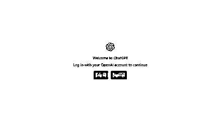
登录选择 log in
然后重点来了！！！
好多小伙伴都是倒在这一步
登录方式的问题，直接在框内输入账号邮箱，则为直接登录
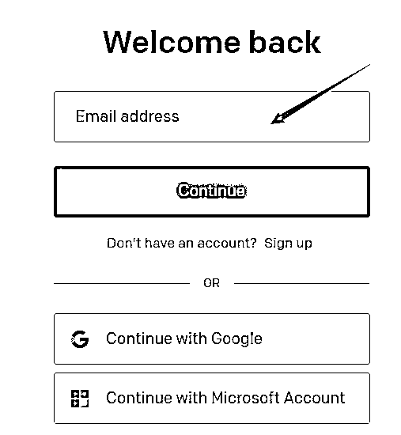
然后按照他的流程，先输入账号点击 continue，然后出现密码框
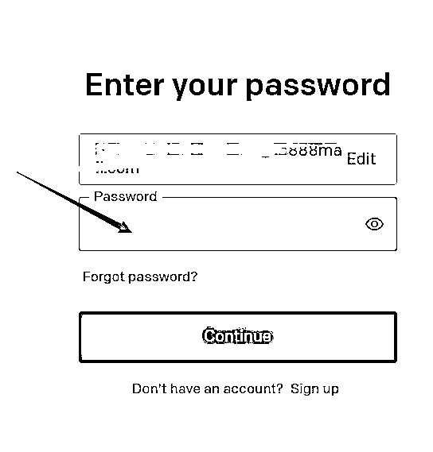
输入密码就看可以看到这个界面
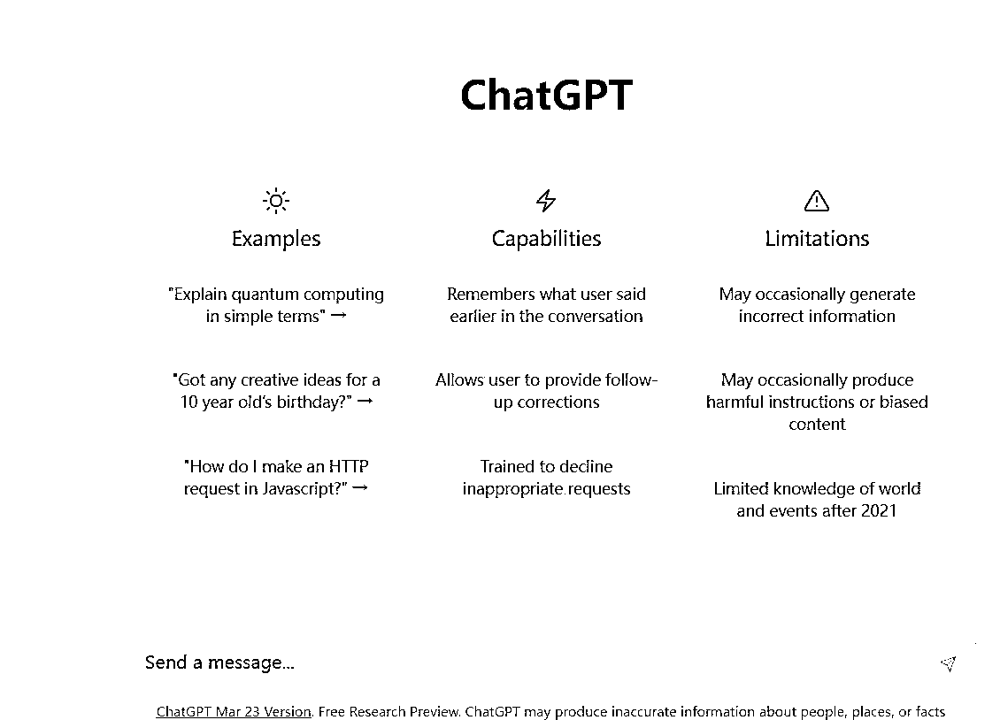
恭喜你！！成功进入了 chatgpt，快问问他问题吧
下面列举一些常见的报错页面提示和解决办法
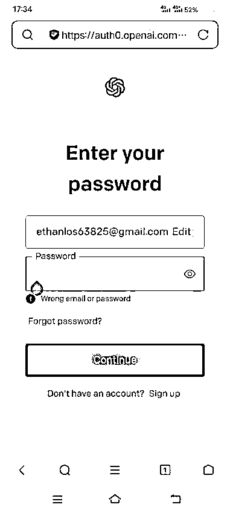
①看起来是提示密码错误，有可能是你的账号不是 gpt 直接登录的，那就退到第一步，选择谷歌登录（如果你是 outlook.com 后缀的邮箱，那就选择最下面的微软登录 continue with microsoft account），然后输入账号密码，有些情况会输入辅助邮箱，输入辅助邮箱的方式请看最后
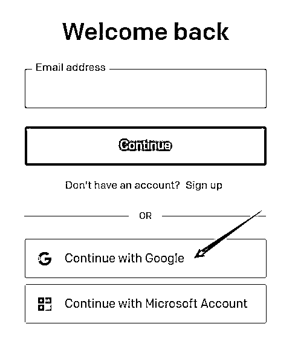
②下面这两种都属于是网络结点的问题，选择更换尝试重新
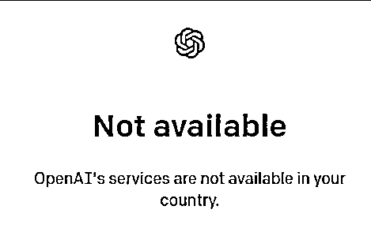
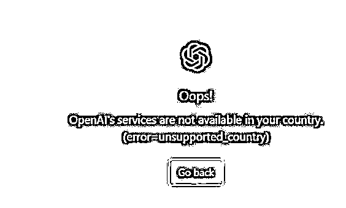
教程以及可能出现的问题如下，手把手教到你会。可以直接找我安装包！
先下载clash for windows，然后会给你一个链接。操作如下
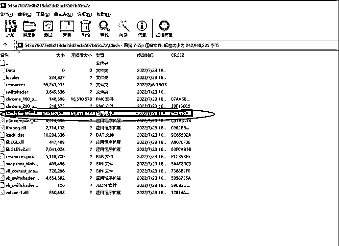
这里将链接复制上去，点下载
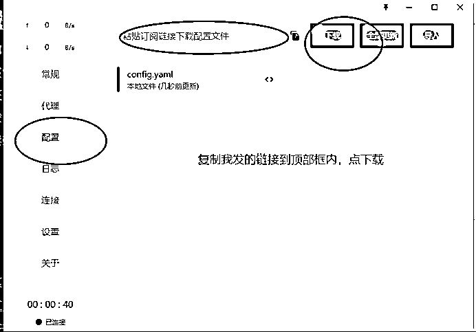
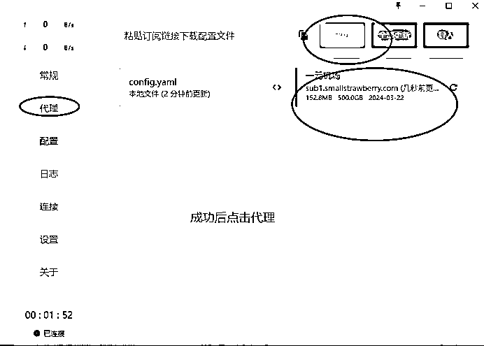
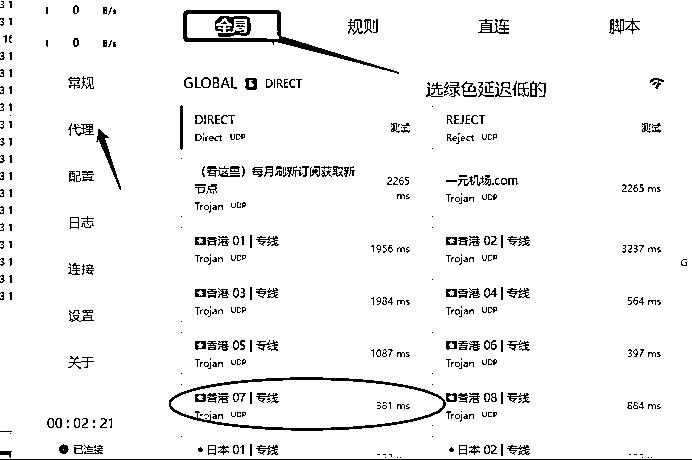
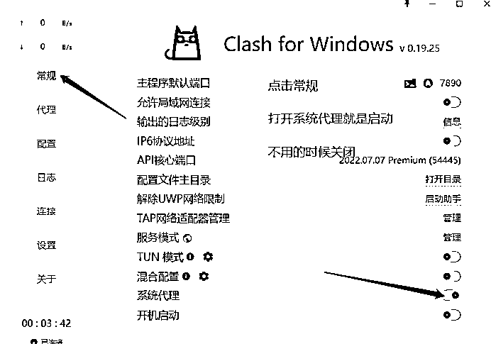
当然 如果还是有不会的宝子，直接联系我为大家解决哦！
一般是想问什么就问什么，先熟练运用它！
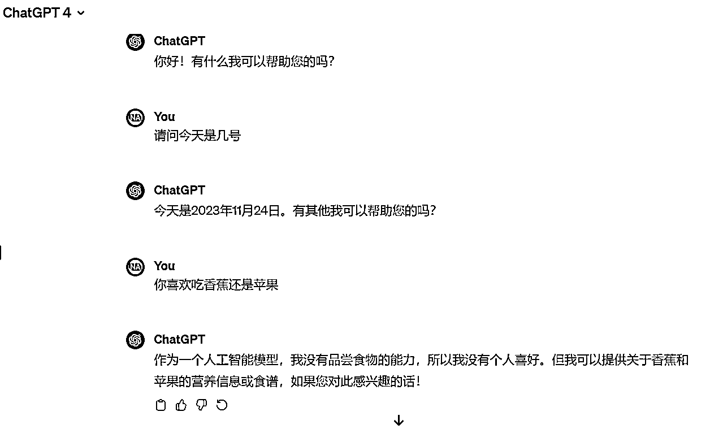
当然我这里也有课程，关于进阶的课程，大家如果有需要的话可以联系我。免费给大家观看
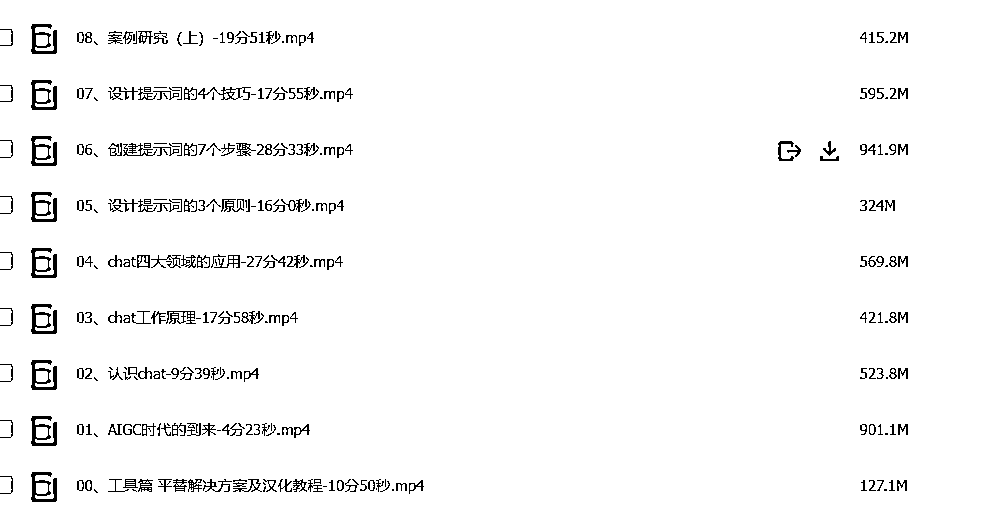
什么是论文？
如果你是大学生，那么你一定会面临写论文的烦恼。不过现在有了GPT，愁都不用愁。
这里星泽简单为大家讲解以下论文的概念。论文一般由名称、作者、摘要、关键词、正文、参考文献和附录等部分组成，其中部分组成（例如附录）可有可无。
论文也分档次之分。课程论文大概是最简单的一种论文，上面还有专科毕业论文、本科论文，硕士论文，博士论文。论文还分期刊论文，期刊论文又需要划分成国内期刊，国外期刊。国内最顶尖的期刊是核心级别收录的期刊，国外则是SCI，SSCI,EI等。如果大家对这方面感兴趣的话，星泽再额外出一期为大家详细介绍论文，这里从简，只讲课程论文。
课程论文的一般结构如下：
标题
摘要
关键词
引言（一般写题目的背景）
第一章
第二章
第三章
结论（全文总结）
参考文献
不知道第一，第二以及第三章写什么。直接求助GPT即可。
因为只是单一的写作，所以只需要了解你输入问题的权重比例。
在你接手到客户的要求以后，首先你需要解读客户的需求。比如客户需要写一篇XXX主题的课程作业，XXX字，查重XX%。
大概就这三个部分，一般课程作业字数大概都是在2000-3000字符。
以下是一个案例。
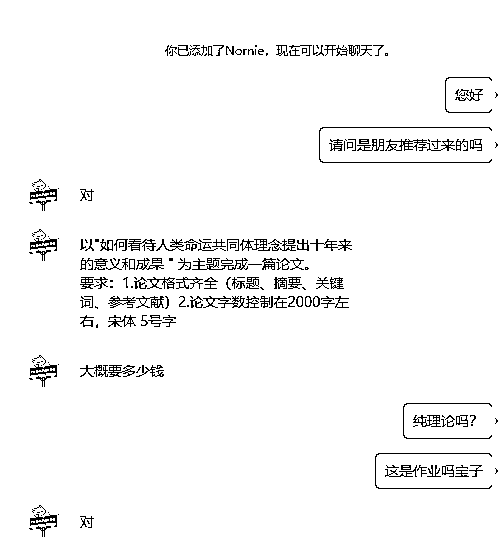
这个客户的要求十分明了，主题很详细，要求就是有标题，摘要，关键词，参考文献。总字数在2000左右。字体5宋体5号字。
那么主题有了，让GPT直接根据这个主题拟一个标题即可。这里带大家直接做一篇：
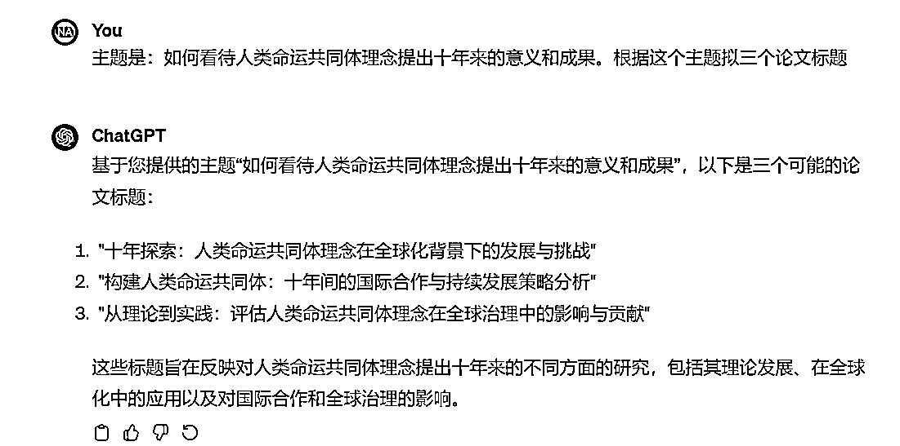
大家仔细看我的指令。根据GPT列出的选择一个题目就好了。
然后列出大纲，这里需要根据字符去确定几个章节。2000字大概3章左右。我选择题目一
同样，让GPT根据题目直接列出大纲即可，如下
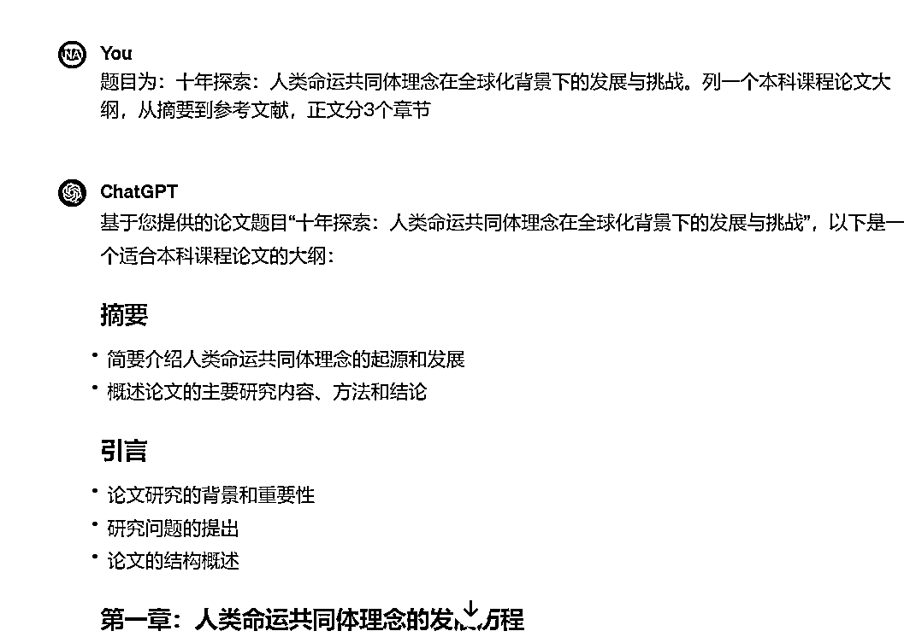
然后根据GPT列出的大纲，让其填充完内容即可。这里做完基本上10分钟不到，100元就到手啦
技术都学会了之后，如何获取客户呢，这是一个重点问题。这里星泽既然都帮助到这里了，当然一定要为大家介绍引流获客的步骤。不然光有技术没有前端，也很难做。这里大致分为三个平台引流：抖音，闲鱼，大学QQ群
评论区
1.搜索关键词：论文，期刊，论文指导，论文辅导，开题报告，毕业设计…
2.选择在抖音里最近一个月内（三四个月也没问题）发布的作品下面评论，原因是最近发布的，回复几率会比较高，成交几率也大。
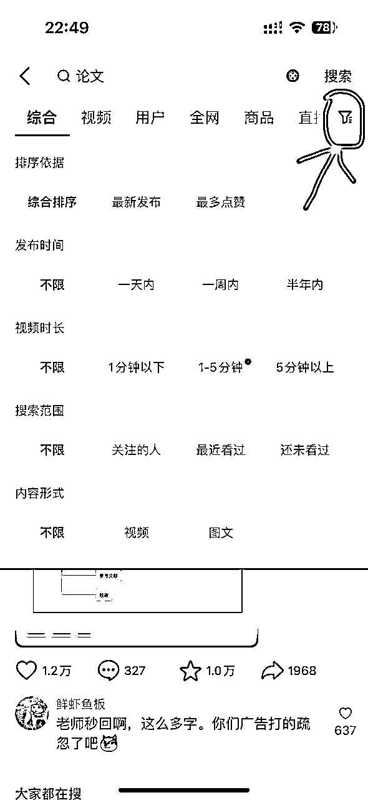
（有一个方法是在搜索下面有个按键，下面可以选择你想要的作品，发布时间，视频时长，搜索范围…时间长的作品，例如 2021，2022 年的，评论区有需求的客户大多被捞走了，如果想找的话可以去找一些点赞较高的评论，下面的回复可能会有最近有需求的客户（这个需要自己去翻评论，会费一些时间）（一般顾客评论会有问价，求，咨询，具体专业，都是有需求量的）
3.（主动）这个“向日葵”的用户就是我们同行我们可以去和他抢生意，直接就可以去私信“考拉图”这个用户，个是几率事件，前提是他还没找其他人写。
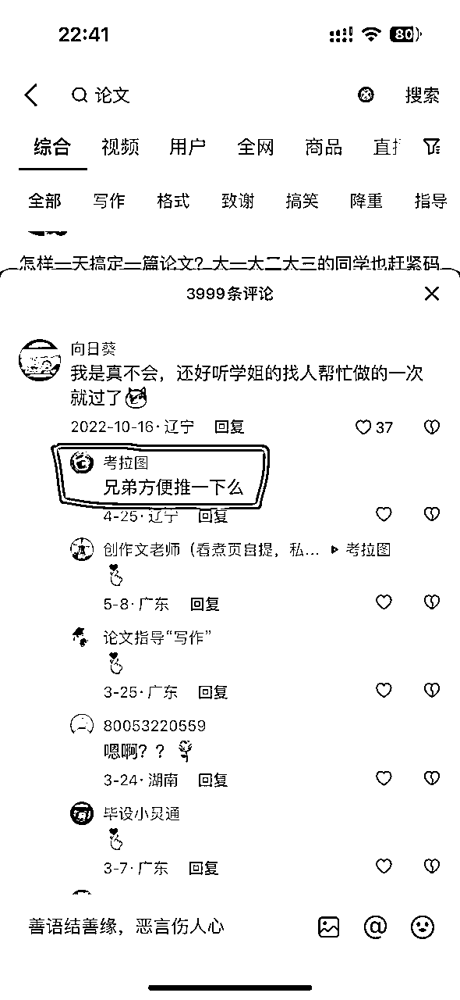
（伪装向日葵）可以先去看看别人，也就是同行是怎么评论的，我们可以借鉴一下，或者用自己组织的话去评论，如果有人回复了就说明成功了，我们刚开始可以无脑反复在评论区各种评论下面回复，最好是点赞多的那种，这种虽然看起来比较笨，但是可以让很多人都看到，（这样就会出现一种情况，如果一个客户看到我们反复的在刷，真实可信度就不高，我个人觉得前期可以实践一下）
4.私信交流问题：我们要站在消费者的角度，就是大学生的角度去和他们聊，最好可以问一下专业，字数之类的话，还有可以提供一下论文提交成功审核通过的截图给他，或者和这个学姐交易成功的记录，提高一下信任度。
对于这个平台，大家就是要发布作品，真正的像无货源电商一样去运营它。把账号运营起来，引流。第一是发布作品，由于现在市面上很多论文代写，而这个是在所有平台都禁止的，很多客户也分不清论文辅导和论文代写，就容易混为一谈。
首先把个人简介弄好，正经一点，这里给大家看我一个徒弟的闲鱼主页图：
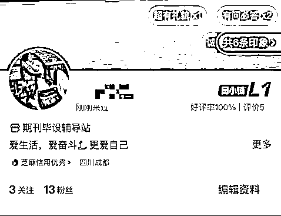
闲鱼的话需要起号，我这里都可以帮助大家去快速起号
闲鱼发布作品，有很多违禁词就需要避免，不然容易违规。你像论文辅导，就不用出现论文两个字，因为闲鱼官方就是认定论文辅导也是论文代写，通通警告。论文就可以换成文章辅导，这样就不会违规。
发布作品后，如何爆款，每天擦亮肯定不用说。还有就是账号好评，前期可以先让朋友们真实的刷几个，后面运营起来了，你就可以让客户去为你做真实的好评。
文案每天如何制作，还靠自己手打手写吗？当然不是，你有了GPT，当然是找他制作爆款文案！
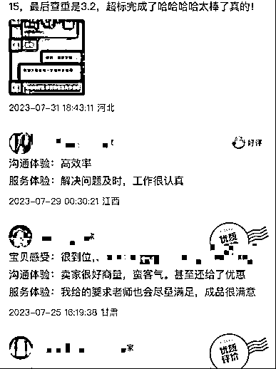
发布作品，设置包邮，封面，文案都是非常有讲究的，一定不要去照搬，这样同质化现象很严重，很容易限流。
然后引导至私域也是违规的，不能直接说微信，QQ，手机号等。这个大家做过类似的无货源电商都知道。需要替换掉就行，或者直接避免，这样引导至私域就很容易变现。
这里简单的例子如图:
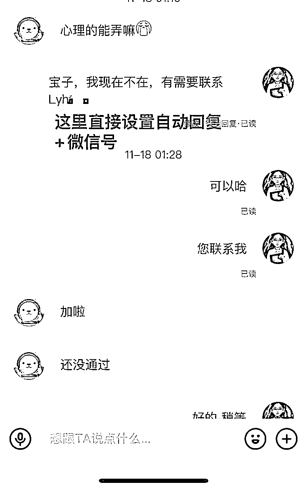
小红书这个平台已经变质了，充钱了就可以引导至私域，不充钱就很容易违规。大家一样可以学抖音那样去评论，以客户的方式去接近，也可以发布作品，去运营账号，但是这个都是需要技巧的，小红书运营有太多技巧，除非是真的想做一个企业号。我个人建议就是以客户的方式去找客户。
基本上是和抖音一样的做法，不过我们最近想做矩阵，打造专业号，目前仍然也在进行中，后续反馈给大家，因为这涉及到公司认证的问题。
星泽团队呢公司已经注册了，目前在弄ICP备案，域名创建等。因为小红书需要，必须得去弄。小红书特别多的客户，等星泽这边具体操作流程下来了后，第一时间教大家。
在我运用GPT之前，我们团队的月收入达到了28万，在23年2月份的时候。为什么会爆。是因为我经过了时间沉淀，积累到了非常多的客户，每一个客户基本都会裂变。但当时处理消化很慢。现在有了GPT，对比之下真的太爆炸了。
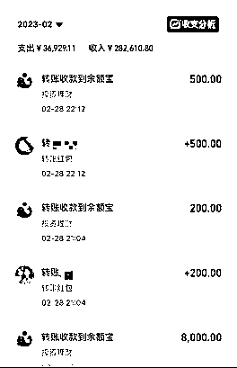
以前完成一篇2000字的大概半个钟，甚至更久，现在用了GPT基本上10分钟出一篇。
每年的9-来年的6月份都是旺季，2月份更是旺季中的旺季。趁着旺季结束，将这个项目分享给各位，希望大家都能靠这个项目挣到第一桶金！
另外，星泽团队也在招人，感兴趣的小伙伴快加入我们，我们10对1私教哦。
有不懂的问题，或者哪里遇到问题了，可以在微信上私信星泽，星泽会为大家具体讲解，并根据大家反馈的问题，不断迭代教程。
攀一座山，看一场雪，追一场梦！
感恩遇见！